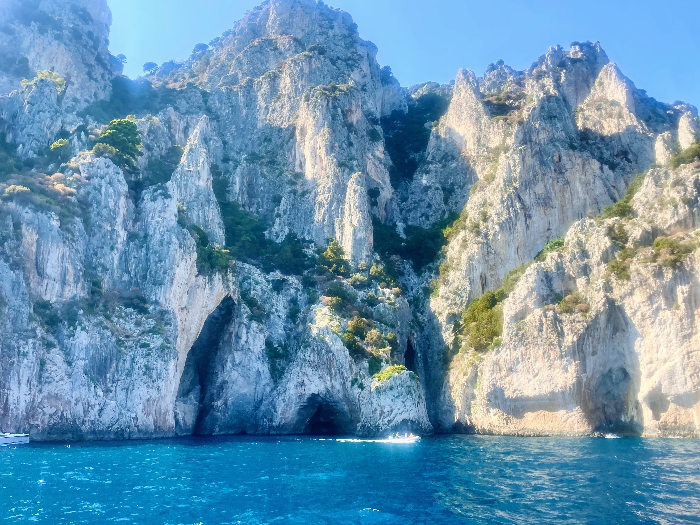

Capri Travel Guide
Capri is stunning—dramatic cliffs, turquoise water, whitewashed buildings covered in bougainvillea. But I'll be honest, it's expensive and crowded.
If you stay overnight after day-trippers leave, or visit during shoulder season, you'll understand the appeal. The Blue Grotto really is that blue. Views from Monte Solaro are breathtaking. Walking through quiet Anacapri streets at sunset makes you forget the crowds.
Go in with realistic expectations and a healthy budget.
Where to Stay in Capri
The island has two main towns—Capri town and Anacapri up on the hillside. Where you stay changes your experience.
Capri town puts you close to the Piazzetta, Gardens of Augustus, and shopping. It's convenient but crowded and more expensive.
Anacapri is quieter and less expensive. You're closer to Monte Solaro and Villa San Michele. The bus connects to Capri town in 10 minutes. This is where I'd stay.
Day trip or overnight? You can see main sights in a day trip, but staying overnight lets you experience the island after crowds leave. If you can afford it, I recommend at least one night.


Where to Eat
Everything is imported by boat here, so prices are high. Restaurants around the Piazzetta charge premium rates for mediocre food.
For lunch with a view—Da Gelsomina in Anacapri serves traditional dishes with great views. L'Approdo by Marina Piccola offers fresh seafood without the tourist feel.
For dinner—Il Riccio beach club serves excellent seafood. Book ahead. In town, Aurora has been around since 1936 and is still good.
For aperitivo—I skip the Piazzetta and head to Capri Rooftop or Bar Tiberio for better drinks and similar views.
Budget option—get supplies at markets in Anacapri and have a picnic.
What to Do
The Blue Grotto—the cave is genuinely incredible. Sunlight turns the water electric blue. But getting there takes time—you wait in line, transfer to tiny rowboats, duck through a low entrance. The experience inside lasts 5 minutes and costs €18. Worth it if you have patience, skip it if crowds stress you out.
Monte Solaro chairlift—I love this ride. The single-person chairlift carries you to the island's highest point with stunning views. At the top you can see the entire Bay of Naples. I go in late afternoon when the light is best.
Gardens of Augustus—these offer the classic view of the Faraglioni rocks. Early morning or late afternoon avoids crowds.
Villa Jovis—ruins of Emperor Tiberius's palace with dramatic cliff views. It's a 45-minute uphill walk from the Piazzetta. The location is stunning.
Villa San Michele in Anacapri has peaceful gardens and sweeping views. It's quieter than most attractions.
A Few of My Favorite Spots
- Monte Solaro chairlift for best views
- Anacapri in the evening after day-trippers leave
- Early morning Piazzetta before 9am
- Gardens of Augustus for classic views
- Il Riccio beach club for lunch
- Quiet streets away from shopping areas
- Watching ferries depart from Marina Grande around 5pm
Practical Information
Getting there—ferries run from Naples (50 minutes), Sorrento (25 minutes), and Positano (40 minutes). Book online in advance during peak season.
Getting around—the funicular connects Marina Grande to Capri town in 5 minutes. Buses run to Anacapri. Everything else is walking.
When to visit—May, June, September, and October offer the best balance. I avoid July and August when it's packed. Winter is quiet but many businesses close.
Timing—day-trippers arrive around 10am and leave by 5pm. If you're staying overnight, those evening hours are beautiful.
Money—everything is expensive. A cappuccino in the Piazzetta costs €7-10. Budget accordingly. Cards are accepted most places.
Crowds—staying overnight, visiting in shoulder season, and hitting sights early or late makes a big difference.